Lecture 1: Earthquakes
The Official Unofficial Earthquake Primer
The Seismic Exam doesn’t require advanced knowledge about earthquakes, so you only need to study specific background information on the topic to pass. This lecture will provide you the knowledge needed to set the stage for ASCE 7, but it won’t cover the topic extensively. The relevance here is to provide enough context about earthquakes so that seismic engineering can be trusted. The biggest takeaway is the Response Spectrum, explained towards the end.
Causes of Earthquakes
There are several sources of earthquakes. These include:
- Tectonic Plate Movement
- Explosions (Chemical/Nuclear)
- Volcanic Eruptions
- Mine Bursts / Cave Collapse

Image via Wikipedia
The most relevant cause of earthquakes in California comes from tectonic plate movements. Tectonic plates are a series of very large pieces of the planet’s lithosphere which constitutes the outermost shell of the earth (i.e. the crust) and the upper part of the mantle. So what causes tectonic plate movement? The center of the earth is hotter than the outer layer, so the tremendous heat difference and pressure causes the hot magma in the mantle to flow in convection currents, resulting in lithospheric plates’ movements. You can imagine them as plates stuck against each other that really want to move due to the accumulation of stresses and strains! This creates a release of kinetic energy from years of built up strain in the tectonic plates. Ground shaking and other earthquake effects are caused by this phenomenon.
Whose Fault Is It?
Faults are zones of weakness in the earth's crust where previous earthquakes have occurred. They are a physical record of earth movements, and can be seen on the earth's surface where different layers of land appear offset. It’s worth noting that these movements along the earth can happen without surface rupture, so there are still many faults below the earth’s surface that may have not been discovered. The displacement event of faults can be slow and timid, or fast and violent.
Faults are classified by their geometry. The different types of faults are Strike-Slip, Reverse, and Dip-Slip. A Strike-Slip Fault is caused by shear stress and involves lateral displacement in the XY direction. A Reverse Fault is caused by compression that results in the upward displacement of the fault plane (hanging wall block) in the Z direction. The Dip-Slip Fault is caused by tension, which results in the downward displacement of the fault plane (hanging wall block) in the Z direction.
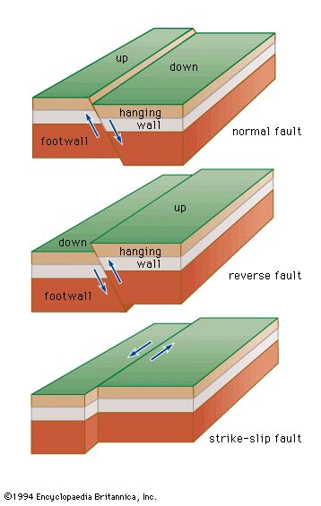Image via Britannica
- Strike-Slip Fault
- Dip-Slip Fault
- Reverse Fault
Other terminology for describing faults includes strike and dip. Strike is the angle between the fault line and North. Dip is the angle the fault surface makes with the horizontal.

Image via Britannica
Ride the Wave
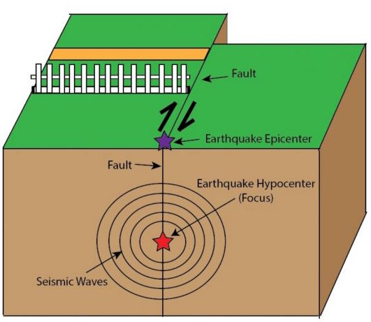Image via Science Over Everything
Before proceeding, the focus point should be defined for understanding. The focus point is considered the origin point of the waves, and is usually some depth below the earth’s surface. During an earthquake, seismic waves radiate outwards from the focus point. Shallow-focus earthquakes are defined as having a focus depth less than 70 km, which are the predominant type of earthquakes in California. The closer the focus is to the surface, the more violent and destructive the earthquake can be. The other common terminology is epicenter, which is the point on the ground surface directly above the focus.

Image via ScienceLearn
There are multiple waves that occur from a seismic event. They are classified as either Body Waves (p-waves and s-waves) or Surface Waves (Rayleigh-wave and love-wave). Body Waves can move through the interior of the earth, while Surface Waves only occur on the surface of the earth.
P-waves (compression waves) are the fastest, and move similar to sound waves by spreading outwards. They can travel through both liquids and solids, and alternatively push and pull the surrounding material. P-waves are typically felt first during an earthquake.
S-waves (shear waves) are slower than P-waves. As they propagate, they shear the rock sideways at right angles to the direction of travel. S-waves cannot move through liquids. The motion of S-waves at the ground surface produces both a horizontal and vertical motion. It is important to realize that there is a vertical motion to earthquakes, not just side to side. S-waves are the most effective in damaging structures, and usually come second after the P-waves. Both P-waves and S-waves can occur below and at the earth’s surface
The last category of waves are known as surface waves, these include Love-waves and Rayleigh-waves. Love-waves are similar to S-waves; however, they do not produce vertical displacements. Rayleigh-waves move similar to a rolling ocean wave - both vertically and horizontally in a vertical plane at the direction of travel.
If you’d like to learn more about seismic waves and see an example,here is a demonstration to help visualize P and S waves: https://www.youtube.com/watch?v=gjRGIpP-Qfw
Attention: Attenuation!
Earthquakes occur when pent up energy is released during tectonic activities. This energy spreads in the form of waves. While propagating, the energy in these waves are reduced non-uniformly in different directions based on the type of rock that they travel through, known as seismic attenuation. Body waves, such as Compressional waves (P waves) and shear waves (S waves), are the primary waves generated during an earthquake, and can cause significant damage. The attenuation of S waves is greater than that of P waves, but for both types of waves, attenuation increases as wave frequency increases. S waves cannot pass through fluids, so it attenuates faster in the case of saturated or weathered rocks.
Quite often, attenuation from an earthquake is underestimated due to the insufficient ground-motion data available in the world. Various mathematical formulas have been developed to predict strong ground motions through attenuation principles as a function of magnitude and distance. Understanding the attenuation of different waves is very important in seismic hazard analysis because they can tell a lot about the makeup of the Earth.
Forward Rupture Directivity
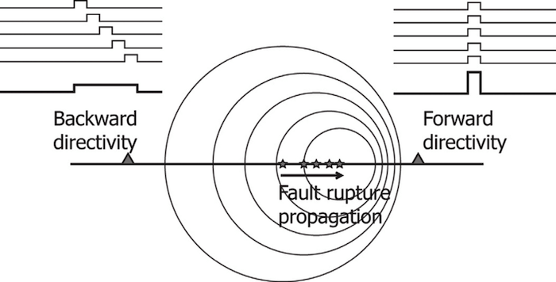Image via ResearchGate
Now that we have gone over the focus point, different types of faults and waves, let’s look at what forward rupture directivity is and why we should know it. When ruptures of earthquakes produce large and quick pulses of near-fault ground motion indicated by velocity time histories, it can be potentially detrimental to structures that have long-periods. At periods longer than 0.5 seconds, ground motions are strongly influenced by several factors: orientation and direction of slip on the fault, location of earthquake’s hypocenter, and location of recording station in relation to the fault.
These determinants allow us to understand that rupture directivity creates a large-period pulse of motion in the horizontal direction normal to the strike of the fault. The interaction of slipping and locked parts of a fault during an earthquake propagates toward the site, and the direction of slip in alignment with the site causes a phenomenon to occur - forward rupture directivity.
The physical explanation may be complex, but the result is simple: A large pulse motion creates a large hazard. This hazard is not easily dealt with in typical design procedures. The conditions for rupture directivity effects are commonly seen in strike-slip and dip slip, but also, reverse and normal faults as well. Inclusion of directivity during analysis accounts for higher hazards, which can be underestimated and overlooked leading to errors in ground motion selection for design. The Seismic Exam will not test this, but it can be important for real structural design.
Measuring Earthquakes
Earthquake measurements were first done based on human perception. As modern technology and standards have changed, more scientific methods of measuring earthquakes have become available. The first intensity scale used to qualitatively describe earthquakes was created by de Rossi of Italy and Forel of Switzerland, and has been used in intensity reports of the 1906 San Francisco earthquake. It was based on a scale from 1 to 10, with 10 being the highest level of damage to structures. In 1931, Waditi from Japan developed a strictly quantitative scale for earthquakes that was further defined by Charles Richter in 1935. The Richter magnitude was defined by the log10 of the maximum wave amplitude in microns recorded by a specific Wood-Anderson seismograph, which had to be located 100 km from the earthquake epicenter. At the time this was a great improvement in scientific measurements of intensity scale for earthquakes, however it has a drawback in that it is based on a specific seismograph instrument that has its own physical period. The Wood-Anderson seismograph amplifies seismic waves within a period range of 0.1 to 2 seconds, so there is some bias in how an earthquake was measured. Another drawback is magnitude saturation, where extremely large earthquakes were under-estimated because the basis of measurement relies on a physical device that does not accurately capture accelerations exceeding 7-8 magnitude.
Today, a more fundamental approach for earthquake measurement is accepted, called Moment Magnitude. Originally defined in the 1970’s by Hiroo Kanamori and Thomas Hanks, the moment magnitude scale derives intensity from the area of fault rupture and distance moved. This effectively measures the work done by the earthquake (known as Seismic Moment), which is a more fundamental measurement of the earthquake energy. This scale is extremely valuable because it is the only magnitude scale that doesn’t suffer from saturation problems and can accurately characterize any size earthquake. Similar to the Richter scale, the final magnitude is reported between 1 and 10 via a logarithmic function.
Mo = DAμ = Moment Magnitude
D = fault slip
A = area of rupture
μ = strength of rock
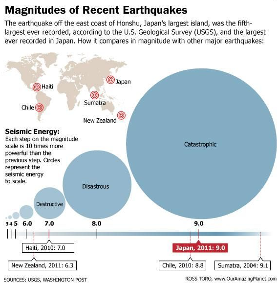Image via Live Science
Earthquake Response Spectra
We’ve introduced some basic geological principles and history about earthquakes, but what information is used on a daily basis for practicing engineers? What do we need to understand for the Seismic Exam? One of the most important topics of seismic design is a site specific plot of period vs acceleration, which is known as a response spectrum as shown in figure below. Period vs acceleration plots are used in determining the seismic force for a structure. The underlying idea is that we pick out a peak ground acceleration from the response spectrum by using the period of our structure as the input. It is important to note that a response spectrum is for a site specific location, and depends on a variety of factors.
The construction of a response spectrum is done through a series of steps that goes well beyond any practical use for the seismic exam, so it is sufficient to say that historical data, numerical integration, and statistical probability are used in their creation. If needed, the plots will be given on the exam with the questions. At least one Response Spectrum will almost certainly show up on the Seismic Principles Exam!
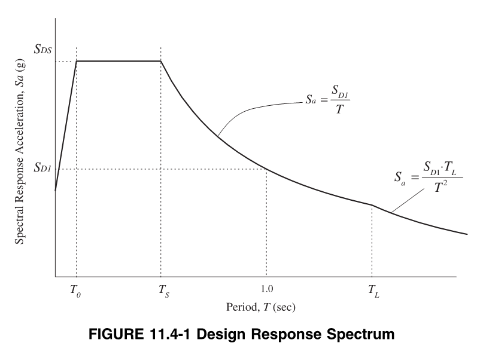- Frequency = Cycles per Second = 1 / Period = speed/wavelength
- Period = Time to complete a cycle = 1 / Frequency
The first step in understanding the response spectra is knowing the significance of the building's many periods (T). A typical building structure has several periods. Based on the geometry, mass and stiffness of a structure, it can naturally vibrate at specific frequencies that correspond to unique motions (known as modal shapes). When we say naturally vibrate, this can be thought of by a simple example.
Imagine your friend is in a swing set. You pull them back as far as you can, then let go. They start to swing forward and backwards. Eventually because of friction they will stop swinging and return to the center of the swing set. But if you had recorded how long it took them to do a full forward and backwards swing, on average, that would be a measurement of a period. A period is just the amount of time an object takes to repeat a motion. Let’s now put this swing set and friend onto a giant shake table (some mechanical device capacible of shaking something at a specific period). If you were tasked with setting the shaking speed to get your friend moving, how would you know what to set it as? Well, you’d recall your earlier measurement of the period of your friend’s motion, then set the table to that speed. The period, or frequency of the shake table would cause resonance with the swing set.
In essence, the shaking of the floor would match how the swing naturally wants to move. If the shake table was vibrating at a random frequency with no mathematical relationship to the swingset period, then the motion of the swingset would be significantly less. The effect of resonance can be extremely detrimental to building safety, as it would cause greater shaking and the potential for failure of critical structural systems.
This concept is best illustrated visually. So check out the video below, it shows a great example of how vibrations at a structure’s fundamental period cause resonance motion! The video demonstrates three different single degrees of freedom systems with three different fundamental periods. The shaking table starts getting faster and faster, moving back and forth at higher frequencies. As the frequency of the table matches a system’s natural period, that system starts moving sideways. (Sidenote: The word fundamental in this context is kind of redundant, since a single degree of freedom system has only one natural period!)
Determining the first period of a structure is approximated in ASCE 7, but can also be computed exactly for idealized systems. The first three (longest) periods of a typical square building include two side to side motions, and one twisting motion. For many simple buildings, only the fundamental period needs to be calculated because of the design procedure. The fundamental period is also known as the first period, and it is by definition the longest period of the structure. We can reasonably say that the most damaging earthquake vibrations are those that match the building’s fundamental period. Determination of a building’s period will be covered in later lectures.
To see some examples of buildings oscillating at their natural period, check out this external blog post
Single Degree of Freedom Structures
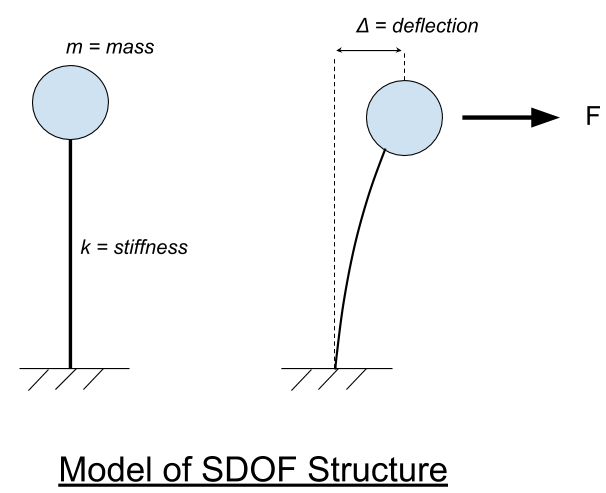Structural systems can be simplified for analysis purposes. When analyzing the vibration and displacement of structures, the concept of degrees of freedom is utilised. Degrees of freedom describes the type(s) of movement that can be experienced by the structure in an earthquake setting. A Single Degree of Freedom (SDOF) structure is the simplest form, and can be characterized by a concentrated mass sitting on a cantilevered column. The ball of mass is permitted to move in only one direction or plane, hence the name “Single Degree of Freedom”.
Multi-Degrees of Freedom (MDOF) structures have additional nodes and are allowed to move in more than one plane. For every degree of freedom, there is a period. So an SDOF has only one period, while MDOF systems have multiple. SDOF are particularly useful for the construction of response spectra because they have only one output motion that we can easily follow. For the purpose of the seismic exam, further understanding of MDOF structures is not required.
We’ve established that structural systems are more impacted by waves that match their natural period. So what does that have to do with earthquakes? Earthquakes are not an analog signal with a perfectly defined, uniform period. Earthquakes are a song, with multiple kinds of waves happening at once. We can hear a song and point out the different instruments and what they’re doing, even though the sound waves are all happening at once. Similarly, we can isolate the accelerations of an earthquake for a specific period of interest. This is a very important concept, and serves as the fundamentals for determining peak accelerations at specific periods.
To give background on the equations used to determine peak accelerations, the equation for a SDOF mass subjected to an acceleration is shown below.
$$ü+2ζω_nu̇+ω_n^2=-ü_g(t)$$
$ω$ = Undamped Natural Frequency
$ζ$ = Damping Ratio
$u$ = Displacement
$u̇$ = Displacement/time = Velocity
$ü$ = Velocity/time = Acceleration
Period$=2π\/ω$
The above equation is used to solve for the acceleration, displacement, and velocity of a SDOF system. It is used in step 3 below.The displacement, velocity and acceleration on the left hand side represents the SDOF system, while the right hand side would be acceleration from a ground motion at time ‘t’.
Ground motions consist of many waves with different frequencies and intensities. In order to get this information into a usable format, there are several steps required. These steps are simplified and summarized below.
Creation of Response Spectra
- 1. Obtain a ground motion history. This is a graph of time vs acceleration from an actual seismic event. 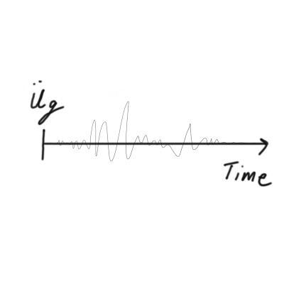
- 2. Select an appropriate damping percentage (typically 5%).
- 3. Set up the equations of motion for a single degree of freedom system (SDOF). An SDOF can only assume motion in one direction, it also has only one period.
- 4. Assume a specific period of the SDOF.
- 5. Solve the equations of motion in Step 3 using the assumed period and damping ratio. This involves solving the equations for each time step! The inputs would consist of various time increments, and the solution to each equation would be the corresponding acceleration, velocity, or displacement at that point in time. This data can then be plotted as a function of time. 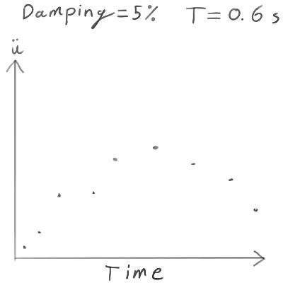
- 6. Record the value of the maximum acceleration across time from Step 5. (We can also record the maximum velocity and displacement too!) 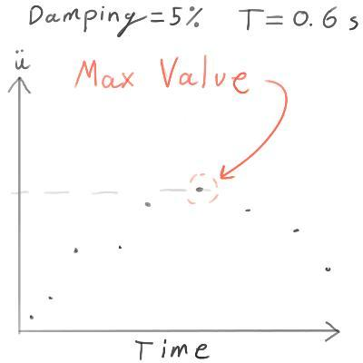
- 7. Repeat Steps 4 through 6 until a sufficient number of periods and corresponding max values are recorded. 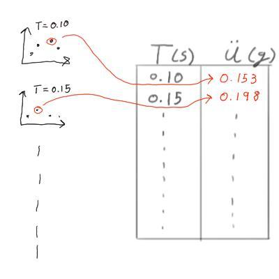
- 8. Graph the recorded period and acceleration values to create the Response Spectra! 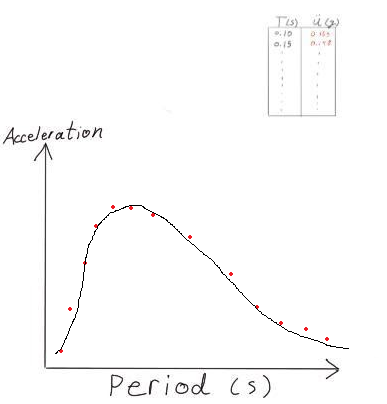
- 9. The final step is to clean up the graph so there are well defined regions with equations for each part of the graph. The original response spectrum from Step 8 is not very easy to use, so engineers will approximate this with a well defined graph that actually increases the accelerations in some areas. Below is the final graph per ASCE 7.
In summary, we analyze a SDOF system with a chosen period & damping ratio subjected to a ground motion. The analysis finds a maximum acceleration for the single SDOF system. This gives us a single data point in our response spectra graph (a single period and a single acceleration). Repeat this for enough systems with different periods and we eventually create a full response spectra! We could get into more detail about an elastic versus inelastic response spectra, but suffice to say everything used for the seismic exam and in our studies will be an elastic response spectra (this just means the SDOF system used to determine peak acceleration was assumed to never yield).
Additional Links
If you’re interested in learning a little bit more about the background of some of the things mentioned above, check out these links: